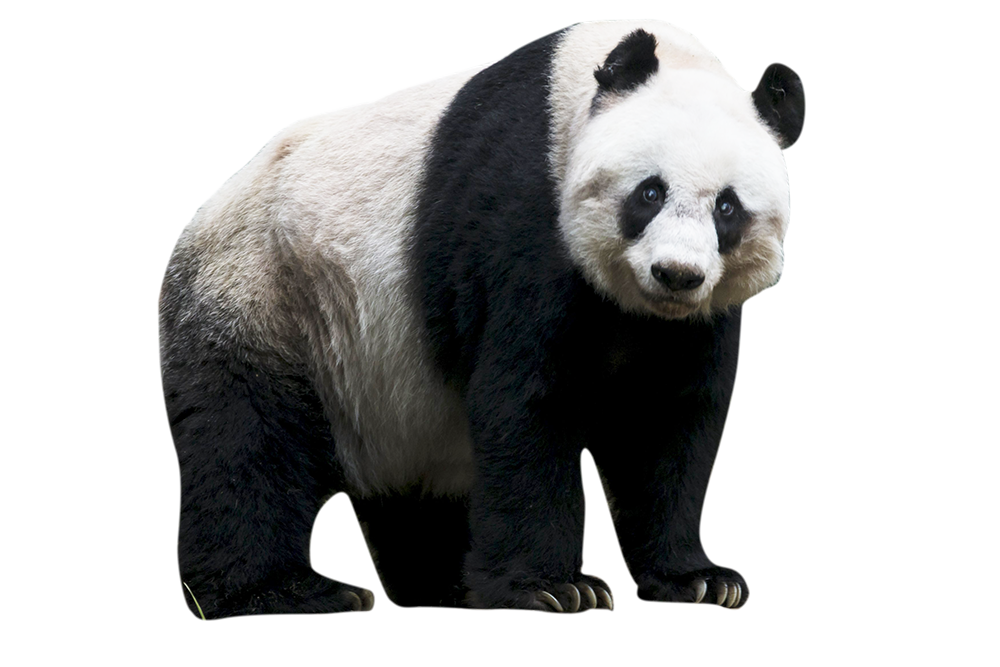

Origami Designs
About Us
Follow Us
Press on the picture to learn how to make it with origami!
Interesting Facts about Camels
- Camel's ears are furry
- Camels can move easily across the sand because of its specially designed feet
- When they find water, they will drink as much as possible

Interesting Facts about Chameleons
- Chameleons are reptiles that are part of the iguana suborder
- Changing skin color is an important part of the communication among chameleons
- Most chameleons have a prehensile tail that they use to wrap around tree branches

Interesting Facts about Pigeons
- Pigeons are incredibly complex and intelligent animals
- Pigeons are renowned for their outstanding navigational abilities
- Pigeons have excellent hearing abilities
Interesting Facts about Teddy Bears
- The Teddy Bears' Picnic song was originally called the Teddy Bear Two Step
- Winnie the Pooh was based on a real bear
- The smallest commercially available stitched teddy bear is a mere 0.29 inches tall, made by So maker Cheryl Moss, whose largest creations are just taller than half an inch

Interesting Facts about Pandas
- Giant pandas are good at climbing trees and can also swim
- Pandas go from pink to white and black (or brown)
- Pandas are "lazy" = eating and sleeping make their day

Interesting Facts about Cicadas
- All cicada species in North America came from a common ancestor
- Cicada species switch from being on a 13 year cycle to a 17 year cycle